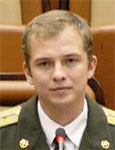

Lyndon B. Johnson Space Center
Houston, Texas 77058
|
National Aeronautics and Space Administration Lyndon B. Johnson Space Center Houston, Texas 77058 |
 |
Biographical Data |
||
Maxim Vladimirovich Ponomarev
(Major of the Russian Air Force)
Test Cosmonaut, Gagarin Cosmonaut Training Center, Russia
PERSONAL DATA: Born February 20, 1980, in Dresden, Germany (where his father was then stationed). Married to Ponomareva (Faizulina) Mariya Valerievna. They have one daughter. His parents, Ponomerev Vladimir Konstantinovich and Ponomareva Irina Vladimirovna, reside in Star City.
EDUCATION: In 1997 he graduated from the Star City high school and entered the Balashov Air Force Pilot School. Due to reorganization he was then transferred to the Krasnodar Military Aviation Institute from which he graduated in 2002 as a pilot-engineer.
EXPERIENCE: After graduation from the pilot school he served as co-pilot in the Air Force Unit 22737.
He was selected as a test-cosmonaut candidate of the Gagarin Cosmonaut Training Center Cosmonaut Office in 2006, and completed basic space training and received qualification of test-cosmonaut from December 2006 to July 2009.
Ponomarev is in advanced spaceflight training since September 2009.
SEPTEMBER 2010